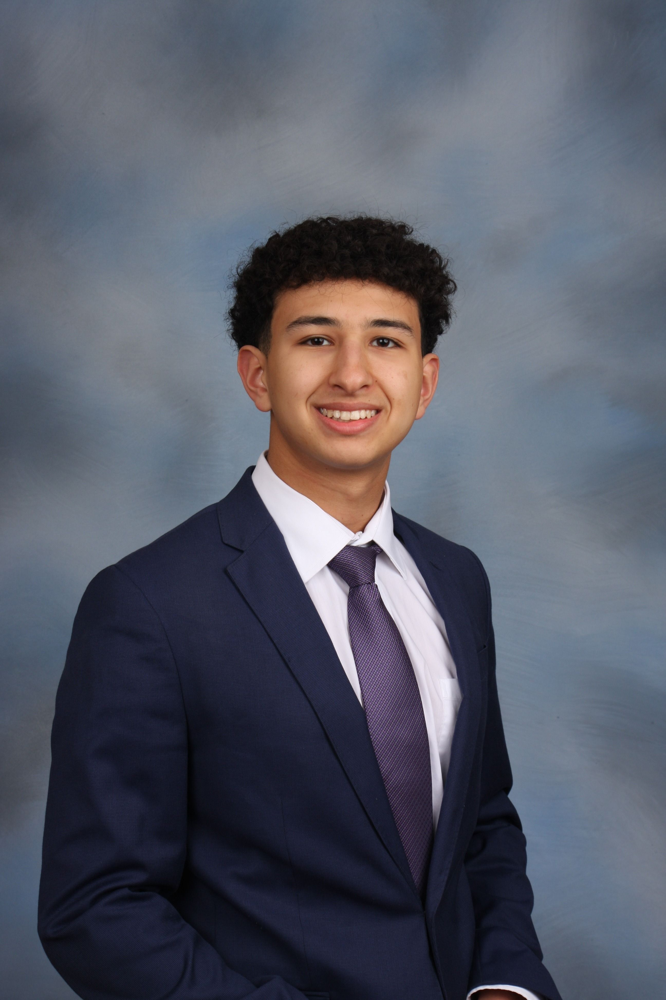
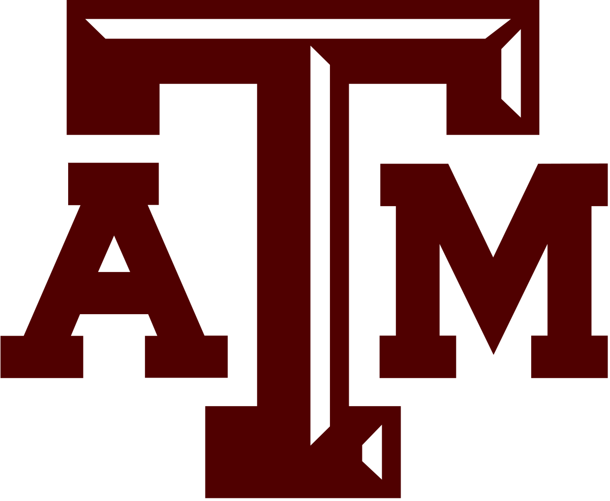
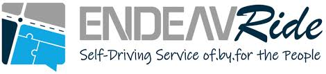
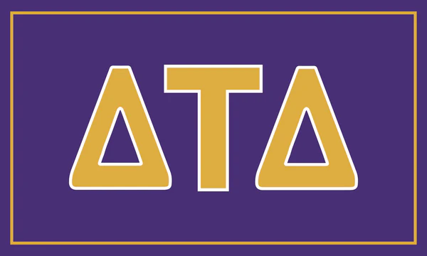

Howdy! My name is Ryan and I am a Computer Science student minoring in
Business at
Texas A&M University.
I just started my Junior year of college and am very excited to be back
in Aggieland.
My favorite time of year is football season (some people call it "Fall")
because I love tailgating, visiting Kyle Field, and just about anything
else related to college football. When I'm not watching college football
(or programming), I find my joy in the outdoors. I am from League City,
TX, a suburb inbetween Houston and Galveston, so fishing and the beach
have always been a consistent feature of my life. The pride and joy of
my life is my dog Lucy, who I try to spend as much time with as possible
when I visit home throughout the school year.


I am a member of the
Delta Tau Delta
fraternity where I serve as an Academic Coordinator. Also, I am
currently working at
ENDEAVR Institute
as a Software Engineering Intern where I am contributing to a brilliant
team of software engineers developing an autonomous driving AI via
Generative Adversarial Imitation Learning (GAIL).
While it can be difficult to balance school, work, and fraternity
involvement, I believe that is worth the effort so that I can look back
on my college experience and truly appreciate every aspect. It is hard
to believe that I am already halfway through my college years, so I want
to savor every moment I have left!
I aim to come out of college with a broad landscape of knowledge in
computer science which I can build upon as I progress through my career.
I also hope to gain enough professional experience to jump right into
the workforce and apply my knowledge and skills. Lastly, I do not want
to leave college without fostering friendships that will last a
lifetime.
